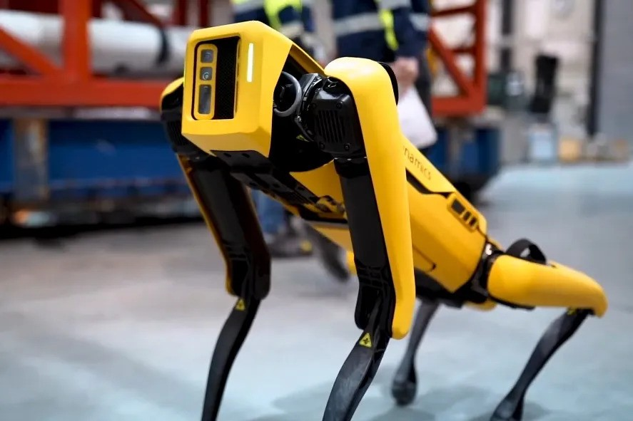

Certifications, Awards & Fellowships
AWS Certified Solutions Architect - Associate
Completed on: February 2025
Provider: Amazon Web Services

Software Engineer with 7+ years of experience delivering enterprise solutions across US and APAC regions, achieving 95% client approval rates and generating over $2M+ in revenue. Proven expertise in deploying advanced LLM models with 92% accuracy for customer support and implementing RAG architectures that enhanced response quality by 70%. Built scalable web applications serving 10K+ users with 98% uptime and reduced deployment times by 90% through optimized MLOps pipelines. MS in Information Systems (AI track) graduate with deep expertise in Machine Learning, AI model training and deployment, and a proven track record in Full-Stack Development.
University of Maryland, Baltimore County
MS in Information Systems, AI track (Aug 2023 - May 2025)
Courses: Advanced PL/SQL, Advanced Software Engineering, Deep Learning, Data Mining, Data Analytics for Cybersecurity, Information Extraction, Machine Learning & Cloud compute and resource management using Terraform
Remote | Senior AI/ML Engineer - Enterprise Applications | Nov 2025 - Present · 1 mos
Baltimore, MD | Full-Stack Developer - Data Science Learning Platform | Dec 2024 - Nov 2025 · 11 mos
Baltimore, MD | Research Assistant | Nov 2023 - May 2025 · 1 yrs 7 mos
Remote | SWE Fellow | Jul 2024 - Sep 2024 · 3 mos
Trichy, India | Jun 2018 - Aug 2023 · 5 yrs 3 mos
Jun 2020 - Aug 2023 · 3 yrs 3 mos
Promoted from Software Developer
Jun 2018 - Jun 2020 · 2 yrs
New Delhi, India | Technical Associate | Jan 2017 - Jun 2018 · 1 yrs 6 mos
Remote | Intern | Mar 2016 - July 2016 · 5 mos
Completed on: February 2025
Provider: Amazon Web Services
Gurunathan, T. S., Raza, M. S., Janakiraman, A. K., Khan, M. A., Pal, B., & Gangopadhyay, A. (2025) Edge LLMs for real-time contextual understanding with ground robots . Proceedings of the AAAI Symposium Series, 5(1), 159-166.. https://doi.org/10.1609/aaaiss.v5i1.35583
Aswin Janakiraman, Taha Hassan, Shenglin Li, Lujie Karen Chen, Jiaqi Gong CASTCurate: An Agentic System to Accelerate the Collection and Annotation of Data-Driven Stories . SIGCSE 2026.
Hover over cards to see details
Developed an AI-powered web app for refactoring code into a target language while preserving semantics using a CodeBERT transformer.

Built AI integration for the Spot robot with Python & ROS enabling autonomous navigation and complex task execution.

Developed a multi-language, RAG-powered chatbot using AWS Bedrock for real-time customer support.

US-level hackathon to predict sea-level anomalies from 20 years of coastal gauge data.

NER variation focusing on rarely occurring entities using BERT & DistilBERT.

Comparative volatility forecasting using GARCH-LSTM, SVR & Moment-1-Large models.

Karen Chen, Ph.D.
Assistant Professor @ UMBC
"Aswin was a A student in my gradaute level machine learning class in Fall 2024. He later on joined the project and has been an invaluable contributor. He brings a strong "can-do" mindset and consistently drives progress at an impressive pace. Beyond contributing to day-to-day development, he led the refactoring our application to make it more scalable, secure, and user-friendly—taking it to the next level of quality. What sets Aswin apart is his open-mindedness and eagerness to learn, as well as his ability to quickly apply new skills and stay abreast of state-of-the-art solutions. He approaches challenges with relentless problem-solving attitude, contributes with both creative ideas and practical solutions. His energy, fresh perspective, and technical expertise have made a significant impact on our project."

Dr.Aryya Gangopadhyay
Director at CARDS, Info. Systems Professor at UMBC
“I had the pleasure of supervising the work of Aswin Kumar Janakiraman at CARDS at the University of Maryland, Baltimore County, where he made exceptional contributions to our projects focused on advanced AI and machine learning techniques. Aswin played a key role in optimizing large language models (LLMs) and implementing Retrieval-Augmented Generation (RAG) techniques, which significantly improved the performance of our VQA systems. His deep understanding of LLM optimization, vector embeddings, and prompt engineering was instrumental in advancing our AI-driven solutions, particularly in real-time natural language tasks and robot navigation. Aswin's technical expertise and ability to innovate in the AI space will make him a valuable asset to any AI/ML-focused team, and I am confident he will continue to make significant strides in the field.”

Samson Oni, Ph.D.
Security Engineer II @ Amazon
“Aswin was a student in my Cloud Computing class at UMBC, and he has consistently demonstrated exceptional technical skills and a strong passion for engineering. He possesses a deep understanding of AWS services and enjoys applying them in practical projects. Aswin is a talented engineer who thrives on building and problem-solving, making him an excellent asset to any organization in need of a highly technical individual with strong cloud expertise. I would gladly recommend him again and again.”

Amit Soni
Product Strategy @ INSEAD
“Aswin is a highly skilled, an adaptable individual and a great learner. He knows when to stand his ground and when to admit a mistake. These are qualities of a great leader and a team player. He is always willing to collaborate and support his colleagues. Aswin is an original thinker, who consistently demonstrates his ability to design and develop simple solutions to complex problems. I had the pleasure of working with him on several projects, and he always received great feedback from fellow team members and customers alike. He has outstanding communication skills and never loses sight of the target, even in challenging environments. I am confident that Aswin will continue to excel in his career and always be a valuable contributor to any team he is a part of.”
I'd love to hear about your next project or chat about AI, robotics, and full-stack development.
Have a question or want to discuss a project? Drop me an email and I'll get back to you soon.
Click below to reveal email
Schedule a quick coffee chat with me to talk tech, career, or just exchange ideas.